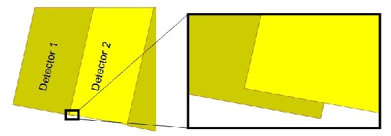
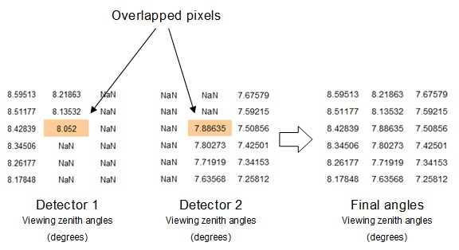
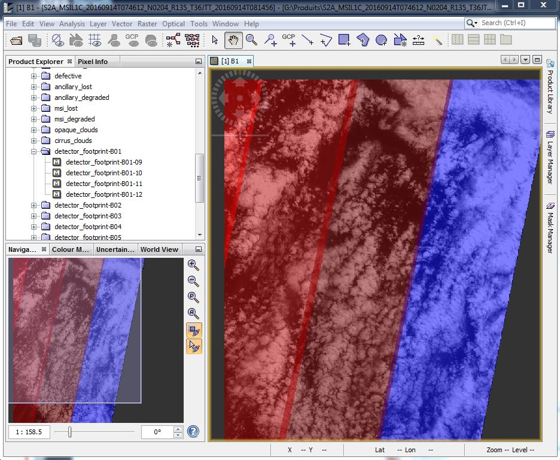
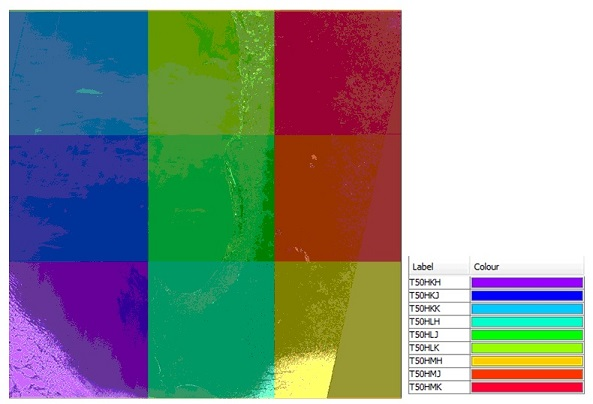

| Import Sentinel-2 Products | |
This option allows to import Sentinel-2 products.
SENTINEL-2 is a wide-swath, high-resolution, multi-spectral imaging mission, supporting Copernicus Land Monitoring studies, including the monitoring of vegetation, soil and water cover, as well as observation of inland waterways and coastal areas.
The SENTINEL-2 Multispectral Instrument (MSI) sample 13 spectral bands: four bands at 10 metres, six bands at 20 metres and three bands at 60 metres spatial resolution.
| Band Number | Spatial Resolution (m) | Central Wavelength (nm) | Bandwidth (nm) | Reference Radiance (W m-2 sr-1 um-1) | SNR @ Lref |
| 1 | 60 | 443 | 20 | 129 | 129 |
| 2 | 10 | 490 | 65 | 128 | 154 |
| 3 | 10 | 560 | 35 | 128 | 168 |
| 4 | 10 | 665 | 30 | 108 | 142 |
| 5 | 20 | 705 | 15 | 74.5 | 117 |
| 6 | 20 | 740 | 15 | 68 | 89 |
| 7 | 20 | 783 | 20 | 67 | 105 |
| 8 | 10 | 842 | 115 | 103 | 172 |
| 8A | 20 | 865 | 20 | 52.5 | 72 |
| 9 | 60 | 945 | 20 | 9 | 114 |
| 10 | 60 | 1375 | 30 | 6 | 50 |
| 11 | 20 | 1610 | 90 | 4 | 100 |
| 12 | 20 | 2190 | 180 | 1.5 | 100 |
The supported Sentinel-2 product types are:
SENTINEL data products are distributed using a SENTINEL-specific variation of the Standard Archive Format for Europe (SAFE) format specification. The SAFE format has been designed to act as a common format for archiving and conveying data within ESA Earth Observation archiving facilities.
The SENTINEL-SAFE format wraps a folder containing image data in a binary data format and product metadata in XML. This flexibility allows the format to be scalable enough to represent all levels of SENTINEL products.
There are two ways to open the Sentinel-2 product:
Image files are provided with a standard file naming convention explained in Sentinel-2 User Handbook. The names should not be modified or SNAP will not be able to find the files.
Depending on the level, the data represent the radiance (Level-1B) or the reflectance (Level-1C, Level-2A, Level-3) values.
In the Sentinel-2 products in cartographic geometry, the angles are provided at 5000 meters resolution by detector. The detector footprints overlap in the limit of each detector, and in the current format (PSD-13/14), it is not possible to determine exactly from which detector each pixel of the overlap area comes from. The angles values in SNAP products correspond to the highest detector number.
 The MSI instrument contains two Focal Plane Assemblies (FPAs): one for the ten VNIR wavelengths and one for the three SWIR wavelengths. Both FPAs are composed of 12 detectors, staggered in two horizontal rows.
The detector footprints for every band are included in the product as masks. As commented previously, these footprints overlap in some areas.
The different tiles/granules composing the full product also overlap.
Some "tile_id" bands and masks are included to indicate the granule from which each pixel is extracted. The criteria applied is to order the granules in alphabetical order
